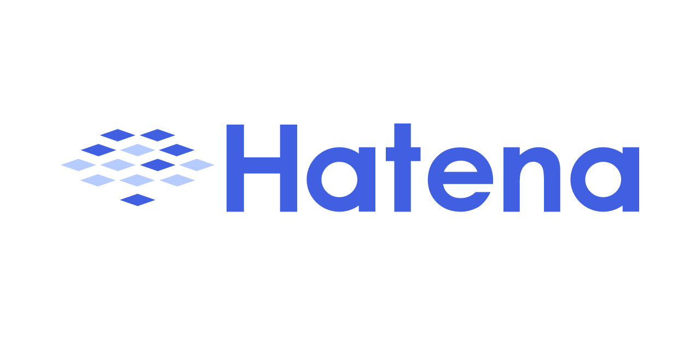
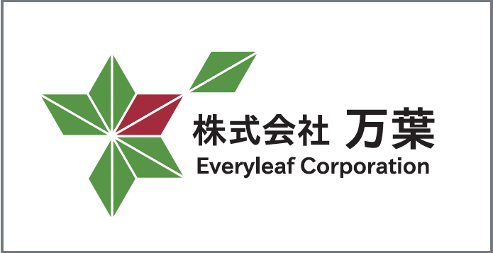

こんにちは世界！
Rails Girls が京都にやってきます！二日間のワークショップの間に、Ruby on Railsのすてきな世界を体験してみませんか？ワークショップは無料です。
１１月２３日までにこちらから応募してください。
Hello world!
Rails Girls comes to Kyoto! During the free two-day workshop we'll dive into the magical world of Ruby on Rails.
Apply now! Applications are open until the 23rd of November.
概要 コーチに教えてもらいながらプログラムを設計して、プロトタイプを作り、コーディングします。
必要なもの 自分のノートパソコン、やる気とキラリと光るイマジネーションを持ってきてください！
お礼 Rails Girls Kyotoでは十分な数のRailsのコーチが見つかりました。 ご協力ありがとうございました。
| 20:00 - 22:00 |
インストール・デーまずは、参加者同士、お互いに知り合いになりましょう。ご自分のノートパソコンをお持ちください。それぞれのパソコンにRubyとRailsをインストールします。二日間とも参加することが望ましいですが、どうしても参加できない！という人は、この日は欠席でも大丈夫です。 |
|---|
| 9:00 - 10:00 |
レジストレーション、ティー金曜日に参加できなかったり、Ruby on Railsのインストールトラブルが残っていれば、この時間に解決しましょう。終わった人は金曜日に話すことが出来なかった参加者と知り合いになりましょう。 |
|---|---|
| 10:00 - 10:15 |
開会一日の流れの説明。スポンサーから一言。 |
| 10:20 - 10:40 |
ワークショップ ― ウェブアプリの設計ウェブやブラウザの仕組みについて知りましょう。 |
| 10:50 - 11:10 |
Tryruby.orgRubyのプログラムを書いてみよう！ |
| 11:10 - 12:30 |
ワークショップ ― ウェブアプリ構築はじめてのウェブアプリにトライしてみよう！ |
| 12:30 - 13:30 | ランチ |
| 13:30- 13:45 |
Bentobox（弁当箱モデル） ― ウェブアプリを理解するためにこの日、これまでやってきたことを振り返りながら、弁当箱モデルを使って理解をふかめます。 |
| 13:45 - 14:30 |
コーチによるライトニングトークス |
| 14:30 - 16:30 |
ワークショップ今日作ったウェブアプリを世界に公開したり、自分流のウェブアプリに変えてみよう！ |
| 17:00 - |
アフター・パーティ参加者、コーチ、スタッフによるパーティです。ワークショップで聞き損ねたことやRubyやRailsのこと、ステップアップの方法など、コーチに気軽に質問してみましょう。 |
参加申し込み
締め切り:１１月２３日
参加了承の連絡:１１月２７日
会場:
株式会社はてな 地図
京都府京都市中京区御池通間之町東入高宮町206 御池ビル
Rails Girls Kyoto は以下のすばらしいパートナーとの共同開催です。
 株式会社はてなは創業以来、人と人とのコミュニケーションを促進し、価値ある情報をより多くの人に届けることをミッションとしている会社です。「人力検索はてな」やソーシャルブックマークサービス「はてなブックマーク」など、ときには楽しくときには便利に、また長く使い続けることのできる、まるで生活のパートナーとして存在できるようなサービスを提供しています。
株式会社paperboy&co. 「もっとおもしろくできる」を 企業理念として、より多くの人に情報発信する喜びを提供できるよう、レンタルサーバー「ロリポップ!」に代表される 個人向けインターネットサービスの開発と運営をしている会社です。 2012 年から開発言語を PHP から Ruby に 切り替えるなど、全社的に Ruby と Rails への取り組みを強化しています。
Facebook(中国語)内でトップクラスのソーシャルゲームを手掛けるHappyElements。2010年に日本法人を設立。独立した開発スタジオとして、Ruby on Rails の高い生産性を活かし、モバイル向けのゲームを開発しています。将来的には中国本社とのシナジーを活かし日本から世界へ、日本発のソーシャルゲームを世界で展開したいと考えています。
クランディムは創意・熱意・誠意を持って、顧客・社会・未来に貢献し、「ありがとうを創造する」を理念として業務系アプリケーション、コンシューマー系アプリケーションの開発を行っている会社です。2012年からはRuby と Railsを取り入れてさらなる「ありがとう」創造したいと考えています。
 (株)万葉 は「楽しく、役に立つ開発」をモットーに、Ruby on Rails によるWebアプリケーション開発や、スマートフォンアプリの開発サービスを提供しています。 開発実績はEC、グループウェア、業務アプリケーション、ゲームなど。 万葉はRubyコミュニティと共に成長していきたいと考えています。
 日本Rubyの会は、Rubyの利用者の支援とRuby(とRubyのライブラリ)開発者の支援を目的とした一般社団法人です。
現在は、ドキュメントの整備や、イベントへの参加協力等を中心に活動しています。
日本Rubyの会は、Rubyの利用者の支援とRuby(とRubyのライブラリ)開発者の支援を目的とした一般社団法人です。
現在は、ドキュメントの整備や、イベントへの参加協力等を中心に活動しています。
参加費はどのくらいかかりますか？ 無料です。申し込むときにはわくわくした気持ちだけあればいいです。
どのような人が参加するのでしょうか？ コンピュータを使ったことがある女性ならだれでも参加できます。 これまでに開催されたRails Girlsイベントには様々な年齢の女性がやってきました。 ご自分のノートパソコンをお持ちください。
男性も参加できますか？ 参加できます。ただし、必ずウェブアプリを作りたがっている女性と一緒に参加してください。 申し込み人数が多い場合はお断りすることがあります。
プログラミングの経験があります。手伝うことはできますか？ Rails Girls Kyoto ではコーチを担当してくれる人を捜しています。 次回以降の RailsGirls でコーチを担当したいという方は連絡先からお問い合わせ下さい。